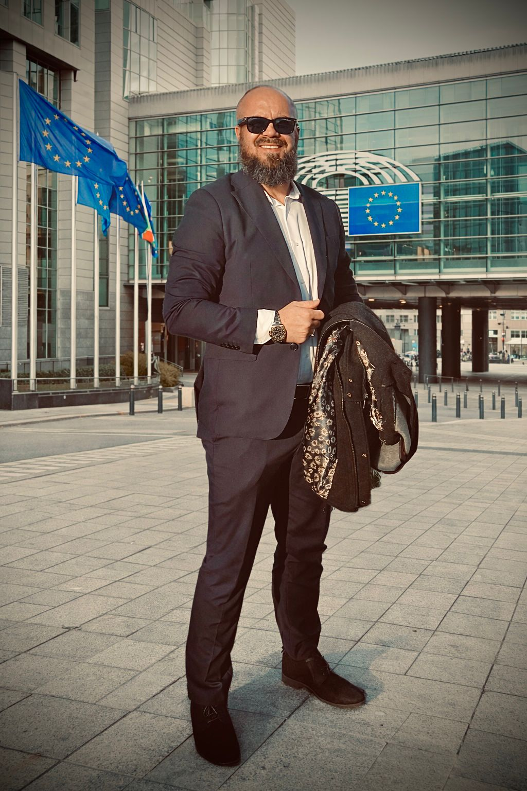

Impresa
EA Group
Persone, organizzazione e servizi professionali costruiti per durare.
02 — Impegno
Impresa, politica, scrittura e filantropia. Quattro ambiti diversi, uniti dallo stesso metodo.
Ambiti
Persone, organizzazione e servizi professionali costruiti per durare.

La diaspora macedone come forza permanente, competente e organizzata.

Formazione, opportunità e sostegno concreto alla crescita delle persone.
Profitto e umanità non sono incompatibili. Lo diventano quando manca responsabilità.
Un’impresa sana crea valore economico, ma anche stabilità e dignità. Un progetto politico serio non promette: organizza competenze e rende verificabili le decisioni.
La scrittura completa questo lavoro, trasformando esperienze e idee in strumenti condivisibili.